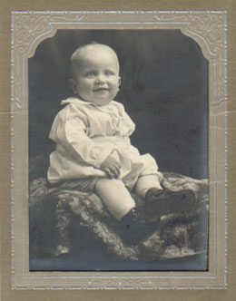
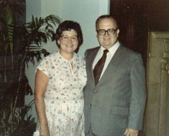

| Neal Carlyle Wogsland was born 1 February 1928 to Obert and Alice Wogsland in Nelsonville, Wisconsin. He grew up in Wisconsin as the eldest amongst his siblings, who were Lyle, Sylvia, and Wayne. As a child he attended several elementary schools, namely, Nelsonville Grade School, Amherst Elementary School, and Shawano Elementary School, from which he graduated in 1941. He graduated from Shawano High School in 1945, and went on to graduate from the University of Wisconsin in 1949 with a BS in Mechanical Engineering. |

|
|
|
After college, Neal was briefly on active duty in the US Army (9/25/50 - 9/25/52), reaching the rank of PFC E-3. He also did sales work for The Alstan Company of Milwaukee, WI. Neal met Mary Dell Fortune and they were married on the 16th of February 1952. After his active duty, Neal got a job on the US Army Materials Systems Analysis Activity (AMSAA)at Aberdeen Proving Ground. Neal and Mary Dell settled down in Bel Air, MD and together had three children: Dell, Jim, and Nancy. Neal worked hard and saw his children grow up and prosper. |
| Neal also did much of the genealogical groundwork for the Wogsland branch of those whose ancestors hail from Vaagsland Gaard. In 1989, while visiting his 5 grandchildren in California, Neal suffered a major heart attack. It was fortunate that he was there, because one of the first artificial hearts kept him alive during the first hours of a touchy recovery from bypass surgery until his heart could take over again. Unfortunately, the constant pressure also destroyed his kidneys. |

|
|
Helping grandson Packie push a tree over near Winter's Run in Bel Air. |
Neal and Mary Dell soon moved from Maryland to Georgia to be close to their son Jim and his family. Neal lived to see his life's work in optics come to fruition during the First Gulf War in 1991. He finally succumbed on the 8th of October. |
Nota Bene: This is by not a complete publications list by any means because much of Neal's work for the Army remains classified.